你的最爱专辑
由你亲手决出
选几位歌手，把他们的专辑放进同一个擂台，两两对决、逐轮投票，最后生成一张夺冠之路。
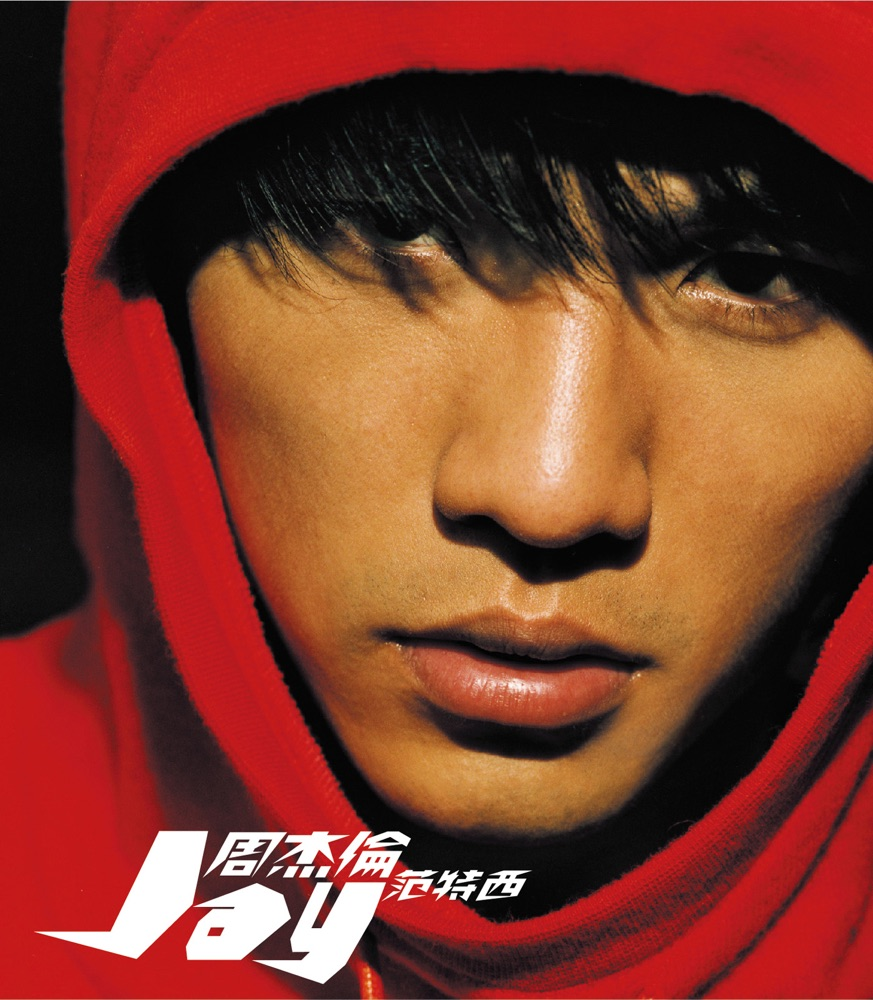
专辑对决
单歌手 / 多歌手混战 · 自动生成对阵 · 每场可试听 30 秒 · 小组赛 + 复活赛
开始对决音乐人格
12 道题，含听感题
去测一测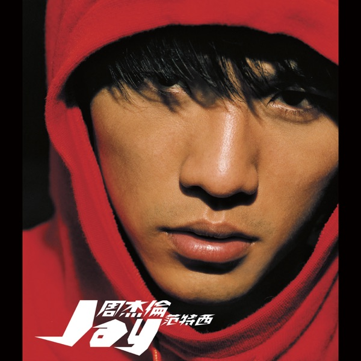
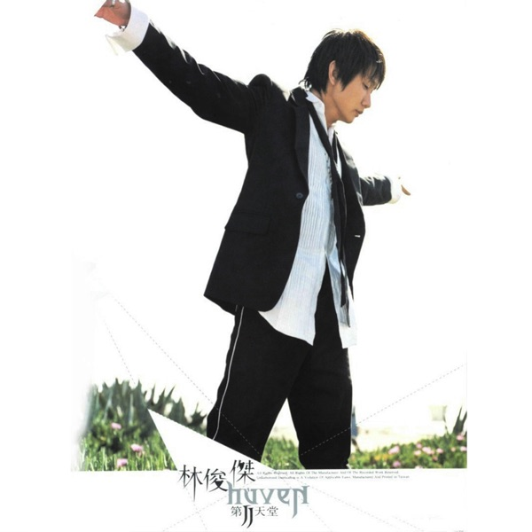
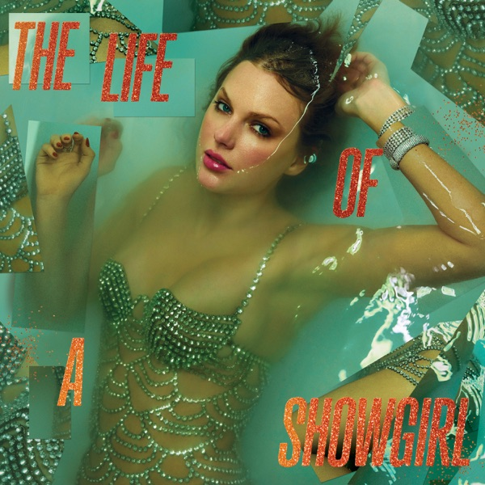
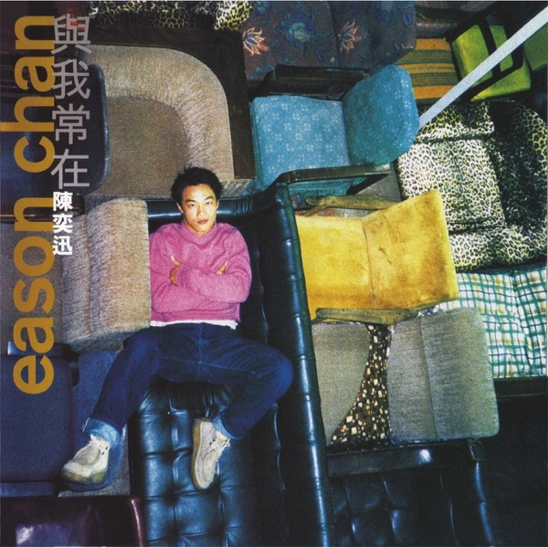
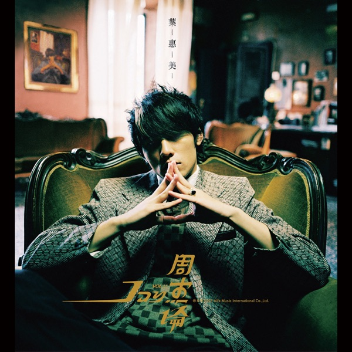
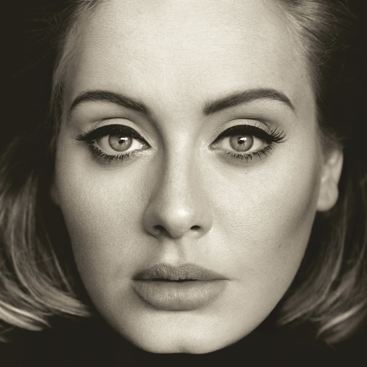
投票规范 · 花一分钟看一眼
榜单的可信度靠大家一起维护，以下行为会被系统记录并分级处理
完整约定见《社区规范》。被判定为异常的投票 不计入榜单与人格分布统计， 所以刷票既改变不了结果，还会让你失去账号。
先选几位歌手，让他们的专辑打擂台
不只是同一位歌手的专辑互相比——你可以把周杰伦、林俊杰、陈奕迅的专辑 放进同一个池子，看看谁的作品更经得起投票。也可以只挑两位，来一场正面对决。
登录后
你的选择才留得下
对决记录、测评结果、收藏的专辑，都会存进你的账号。下次打开就能接着投票。
账号已被禁用
你的历史数据仍然完整保留，只是无法再登录与投票。
如果认为判断有误，可以提交申诉，管理员核实后会恢复账号（状态会改为"正常"）。
如不再使用，也可以申请彻底删除账号及其全部数据。
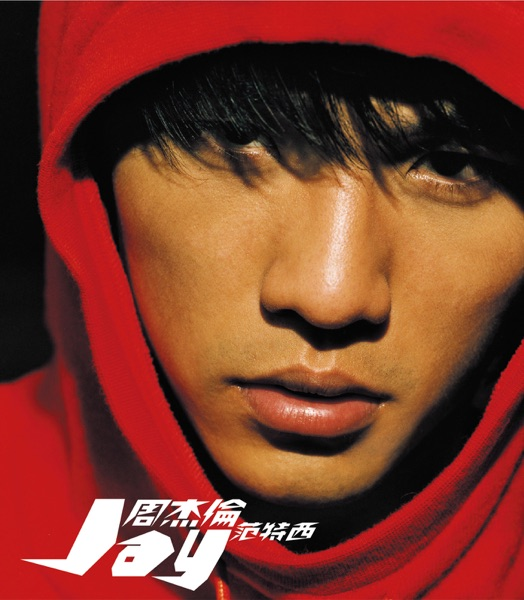
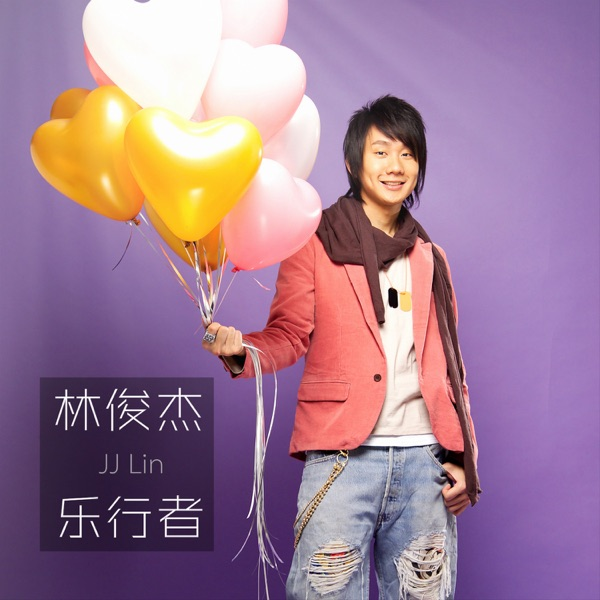
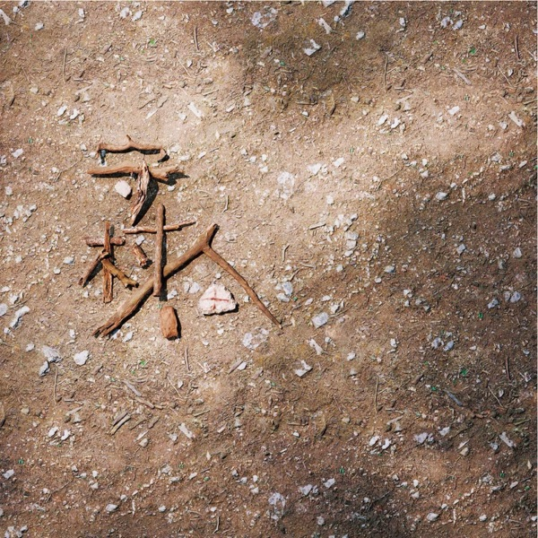
与混战模式的区别：混战会打乱专辑序号，首张专辑可能对上对方第五张，比较失去意义。
胜负按 胜场积分 统计（本图 陶喆 2 胜 1 负，周杰伦 1 胜 2 负）；不用淘汰制，否则第 3 张的胜者没有第 4 张对手，赛程会断裂。
参赛歌手 最少 2 位、最多 6 位 · 每位歌手抽取 3 至 5 张
或从常用组合开始
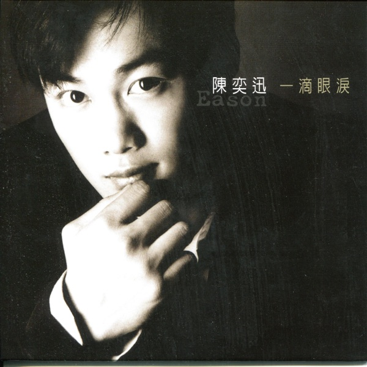
华语三强混战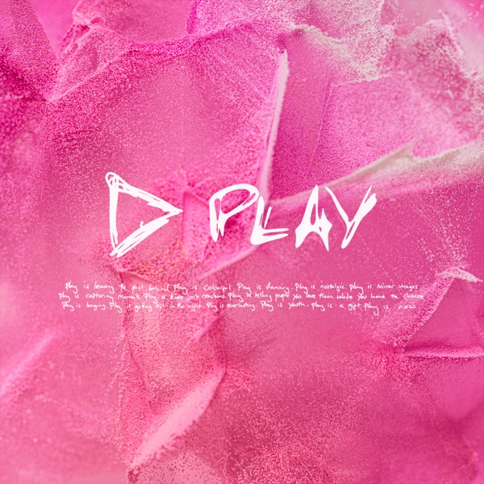
欧美经典对决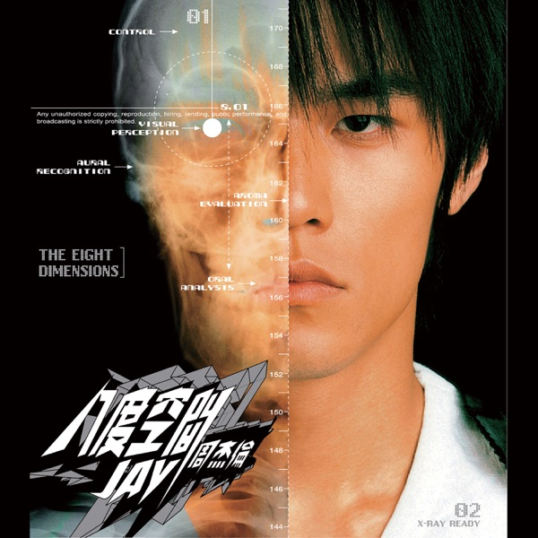
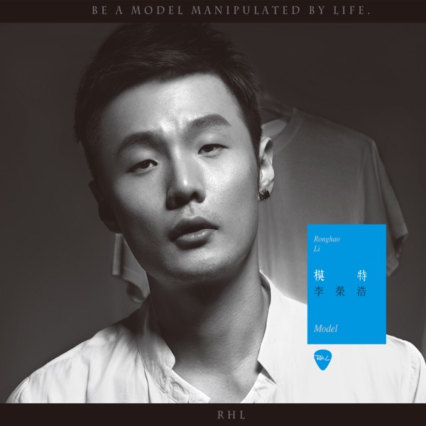
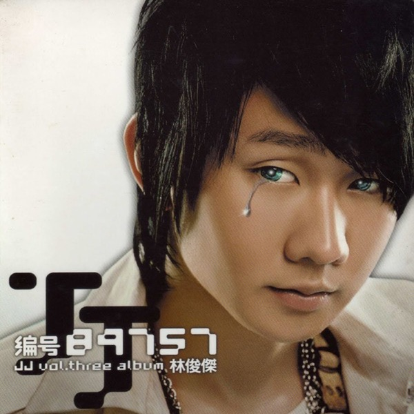
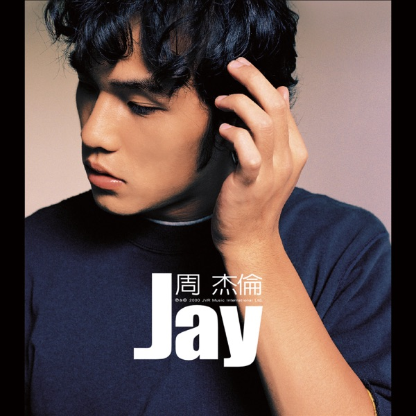
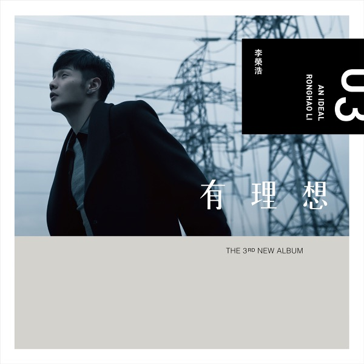
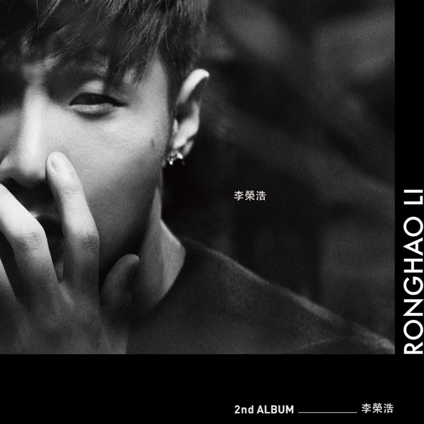
半决赛
决赛
冠军
晋级淘汰赛：樂行者
| # | 专辑 | 胜 | 负 | 得票率 |
|---|
按胜场数排名，胜场相同比总得票数，每组第一名晋级淘汰赛。
组内三场对阵明细
0 胜 0 负 八度空間
0 胜 0 负 Model
0 胜 0 负
范特西
周杰伦 · 2001 · 10 首 · 在 12 张专辑、4 位歌手的混战中胜出
现在改成每轮两行对照： ①轮次标题旁直接写一句白话——《范特西》战胜《第二天堂》，不用推理； ②胜方一行有底色、加粗、"胜"徽章，得票率用大字且着色；败方一行整体压暗、封面转灰、票数变小； ③双方的得票率都写出来（63% / 37%），加起来是 100%，能互相印证。
决赛那一轮用金色描边单独区分。这一页同时是分享图的素材来源。 注意对手分别是林俊杰、李荣浩、林俊杰、陈奕迅——跨歌手对决的故事在这页讲得最清楚。
你的音乐口味
是一种什么样的人格
12 道题，其中两题需要先听一段音乐再作答。答完会得到一张可分享的人格卡， 以及一段针对你个人作答生成的解读——不是所有人共用的模板。
听到一首陌生的歌，你最先注意到的是？
凭第一直觉选就好，不用想太久
听完这段片段，你的第一感觉是？
先听，再答——这是音乐测评与普通问卷的区别所在
页面上那个「普通题 / 听感题」切换是原型演示用的（方便一次看完两种题型）， 真实产品里没有这个开关。答辩时可以展开讲：听感题让测评不只依赖自我描述，而是引入了真实的听觉反应， 这是本作品区别于常规 MBTI 类问卷的地方。
牵着走的人
你对旋律线的敏感度远高于平均。一段好听的前奏，就足以让你决定要不要继续听下去—— 编曲、歌词、节奏对你来说都是次要的，旋律好不好听，是第一道门槛。
AI 个性解读
你在第 3 题选了"先记住旋律"，第 7 题的听感题又偏向"想安静听完"—— 这说明你偏爱旋律驱动、情绪线清楚的作品，而不是靠节奏推进的类型。 编曲层次给了 6 分，说明你不排斥复杂的制作，但前提是旋律得站得住。 建议从旋律优先、编曲克制的专辑入手，更容易一次听进去。
由大语言模型根据你的作答生成 · 非模板文案recommendAlbumIds；生成时从这个池里取 3 张，并按该用户得分最高的维度排序，
卡片上那行"匹配 旋律敏感 9/10"就是这个依据的可视化。池子初期由管理员在后台维护（每类 6 至 10 张），
后续可以根据真实行为统计自动补充（某类型用户投票胜率最高的专辑）。
这是"冷启动靠人工、增长靠数据"的常规做法。
推荐区的三张专辑与对决页同一套呈现：封面保持原图、大而柔的投影带专辑自身色晕、 专辑名下方色条、歌手名着色；鼠标移上去柔光会跟过去（三张分别是绿 / 红 / 橄榄色光）。 人格卡图片本身不叠任何光效，保证导出的图是干净的。
六种人格的分布情况
音格
管理后台
管理测评题目、人格类型、音乐数据缓存与用户。所有操作会记入日志。
数据看板
截至 2026-09-15 23:50 · 数据每 10 分钟更新一次
近 6 个月对决发起量
单位：场 · 反映平台活跃趋势
近 14 天投票量
每日累计投票数
人格类型分布
共 487 人完成测评
测评题目管理
共 12 题 · 含 2 道听感题 · 修改后立即对前台生效
| 题号 | 类型 | 题干 | 选项数 | 状态 | 操作 |
|---|---|---|---|---|---|
| 1 | 普通 | 听到一首陌生的歌，你最先注意到的是？ | 4 | 启用 | 编辑下移删除 |
| 2 | 普通 | 你更常在什么场景下听音乐？ | 4 | 启用 | 编辑下移删除 |
| 3 | 普通 | 一首歌听第二遍时，你通常会？ | 4 | 启用 | 编辑下移删除 |
| 7 | 听感 | 听完这段片段，你的第一感觉是？（片段：《以父之名》） | 4 | 启用 | 编辑下移删除 |
| 9 | 听感 | 这段编曲里最吸引你的是？（片段：《晴天》） | 4 | 启用 | 编辑下移删除 |
| 12 | 普通 | 朋友推荐一张你完全没听过的专辑，你会？ | 4 | 停用 | 编辑上移启用 |
编辑题目 · 第 3 题
选项分值决定该题影响哪些维度，修改会影响计分结果
| 选项 | 选项文本 | 影响维度 | 分值 |
|---|---|---|---|
| A | 旋律敏感 | +2 | |
| B | 节奏偏好 | +2 | |
| C | 词句关注 | +2 | |
| D | 安静倾向 | +2 |
人格类型管理
6 种类型 · 推荐专辑池决定给用户推什么
配置推荐专辑 · 探索者（EXP）
当前推荐池为空，测评结果页会隐藏推荐区。建议先配 6 至 10 张。
音乐数据管理
本地缓存 1,284 张专辑 · 数据地区 hk · 缓存有效期 30 天
「状态」是什么意思
平台不每次都实时请求外部接口，而是把数据存在自己库里，按状态决定要不要重新拉
外部接口有调用频率限制，也不可能让用户每次都等它返回。 做了本地缓存之后，即使外部接口临时不可用，平台仍然能正常跑—— 这就是需求里那条「外部依赖降级」。
| 歌手 | 专辑 | 曲目 | 符合准入 | 更新时间 | 状态 | 操作 |
|---|---|---|---|---|---|---|
| 周杰倫 | 48 | 412 | 17 张 | 2026-09-15 17:02 | 新鲜 | 刷新明细 |
| 林俊傑 | 80 | 566 | 16 张 | 2026-09-15 19:31 | 新鲜 | 刷新明细 |
| 陳奕迅 | 122 | 894 | 44 张 | 2026-08-30 12:10 | 将过期 | 刷新明细 |
| 李荣浩 | 48 | 203 | 8 张 | 2026-07-11 09:44 | 已过期 | 刷新明细 |
| Taylor Swift | 200 | — | 未统计 | 2026-09-15 20:05 | 新鲜 | 刷新明细 |
准入规则过滤说明
每次拉取都会执行，不符合的专辑不会进入对决池
| 规则 | 作用 | 本次剔除 |
|---|---|---|
| ① 类型与体量 | 须为专辑类型，且曲目数不少于 7 首（排除 Single 与 EP） | 20 |
| ② 署名为本人 | 按 artistId 编号比对而非名称，避免繁简体差异误判 | 2 |
| ③ 非现场 | 名称排除：现场 / 演唱会 / 音乐会 | 4 |
| ④ 非原声 | 名称排除：原声带 / OST | 2 |
| ⑤ 非精选 | 名称排除：精选 / 合集 | 1 |
| ⑥ 非合辑 | 名称排除：拼盘 / 合辑，且不含多歌手连接符 | 1 |
| ⑦ 同名去重 | 保留最早发行、不带豪华版后缀的版本 | 1 |
| 剔除合计 | 31 | |
用户管理
共 612 位用户 · 其中 2 位已禁用
| 用户 | 加入时间 | 对决 | 投票 | 测评 | 状态 | 操作 |
|---|---|---|---|---|---|---|
| huzurui 胡祖锐 | 2026-09-15 | 6 | 78 | 3 | 正常 | 详情禁用 |
| chenyi 陈一 | 2026-09-12 | 11 | 164 | 2 | 正常 | 详情禁用 |
| music_lover | 2026-09-08 | 3 | 41 | 1 | 正常 | 详情禁用 |
| spam_001 | 2026-09-14 | 0 | 0 | 0 | 已禁用 | 详情启用 |
| test999 | 2026-09-13 | 0 | 0 | 0 | 已禁用 | 详情启用 |
刷票到底是怎么判断出来的
不是"投得多就等于刷票"—— 正常用户一天投几十场很常见。系统看的是行为特征，分三级判定
| 等级 | 触发条件 | 处理 |
|---|---|---|
| 轻度 | 连续两次投票间隔 < 3 秒；或 1 分钟 > 20 场；或 1 天 > 300 场 | 返回"操作过于频繁"，不计违规 |
| 中度 | 对同一场次重复提交（绕过前端直接调接口）；或连续 15 场总是投同一侧； 或注册不足 1 小时却已投 50 场以上 | 该票作废 + 弹出警告，记 1 次违规 |
| 重度 | 同一 IP 或设备指纹下，多个账号集中投同一张专辑 | 标记全部相关账号，转管理员复核 |
最关键的一点：被判定为异常的投票 不计入排行榜与人格分布统计。 也就是说刷票既改变不了结果，还会赔上账号——这条规则同时写在了首页的投票规范里。
什么情况下会禁用用户
目前由管理员人工判定，满足任一条即可处理；处理记录会保留在操作日志中
| 情况 | 怎么判定 | 处理 |
|---|---|---|
| 刷票 | 同一账号对同一场次重复投票，或短时间内高频投票（接口返回「重复操作」的次数明显异常） | 禁用 |
| 垃圾内容 | 昵称或账号名含广告、违法违规、攻击性内容 | 禁用 |
| 恶意请求 | 绕过前端直接高频调用接口，对服务造成压力 | 禁用 |
| 本人申请 | 用户主动要求注销账号 | 禁用 |
| 误判申诉 | 用户说明情况、核实确属误判 | 恢复启用 |
为什么只做"禁用"不做"删除"
对应需求 FR-24 与 NFR-D5
用户产生的投票记录是排行榜与人格分布的数据来源。 如果直接删账号，这些历史数据会变成"没有主人的孤儿记录"， 榜单和统计口径就会失真。所以这里的处理是禁用： 账号保留、数据保留，但令牌在下次校验时被拒绝（接口返回 2003）， 该用户无法再登录与投票，也不会污染新的统计。